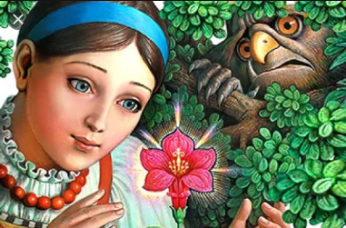

В некиим царстве, в некиим государстве жил-был богатый купец, именитый человек.

Много у него было всякого богатства, дорогих товаров заморских, жемчуга, драгоценных камениев, золотой и серебряной казны; и было у того купца три дочери, все три красавицы писаные, а меньшая лучше всех; и любил он дочерей своих больше всего своего богатства, жемчугов, драгоценных камениев, золотой и серебряной казны-по той причине, что он был вдовец, и любить ему было некого; любил он старших дочерей, а меньшую дочь любил больше, потому что она была собой лучше всех и к нему ласковее.
Вот и собирается тот купец по своим торговым делам за море, за тридевять земель, в тридевятое царство, в тридесятое государство, и говорит он своим любезным дочерям:
- Дочери мои милые, дочери мои хорошие, дочери мои пригожие, еду я по своим купецким делам за тридевять земель, в тридевятое царство, тридесятое государство, и мало ли, много ли времени проезжу - не ведаю, и наказываю я вам жить без меня честно и смирно, и коли вы будете жить без меня честно и смирно, то привезу вам такие гостинцы, каких вы сами захотите, и даю я вам сроку думать на три дня, и тогда вы мне скажете, каких гостинцев вам хочется.
Думали они три дня и три ночи, и пришли к своему родителю, и стал он их спрашивать, каких гостинцев желают. Старшая дочь поклонилась отцу в ноги, да и говорит ему первая:
- Государь ты мой батюшка родимый! Не вози ты мне золотой и серебряной парчи, ни мехов чёрного соболя, ни жемчуга бурмицкого1, а привези ты мне золотой венец из камениев самоцветных, и чтоб был от них такой свет, как от месяца полного, как от солнца красного, и чтоб было от него светло в тёмную ночь, как среди дня белого.
Поклонилась ему в ноги дочь середняя и говорит:
- Государь ты мой батюшка родимый! Не вози ты мне золотой и серебряной парчи, ни чёрных мехов соболя сибирского, ни ожерелья жемчуга бурмицкого, ни золота венца самоцветного, а привези ты мне тувалет из хрусталю восточного, цельного, беспорочного, чтобы, глядя в него, видела я всю красоту поднебесную и чтоб, смотрясь в него, я не старилась и красота б моя девичья прибавлялася.
Поклонилась в ноги отцу меньшая дочь и говорит таково слово:
- Государь ты мой батюшка родимый! Не вози ты мне золотой и серебряной парчи, ни чёрных соболей сибирских, ни ожерелья бурмицкого, ни венца самоцветного, ни тувалета хрустального, а привези ты мне аленький цветочек, которого бы не было краше на белом свете.
Призадумался честной купец крепче прежнего. Мало ли, много ли времени он думал, доподлинно сказать не могу; надумавшись, он целует, ласкает, приголубливает свою меньшую дочь, любимую, и говорит таковые слова:
- Ну, задала ты мне работу потяжеле сестриных; коли знаешь, что искать, то как не сыскать, а как найти то, чего сам не знаешь? Аленький цветочек не хитро найти, да как же узнать мне, что краше его нет на белом свете? Буду стараться, а на гостинце не взыщи.
И отпустил он дочерей своих, хороших, пригожих, в их терема девичьи. Стал он собираться в путь, в дороженьку, в дальние края заморские. Долго ли, много ли он собирался, я не знаю и не ведаю: скоро сказка сказывается, не скоро дело делается. Поехал он в путь, в дороженьку.
Вот ездит честной купец по чужим сторонам заморским, по королевствам невиданным; продаёт он свои товары втридорога, покупает чужие втридешева; он меняет товар на товар и того сходней, со придачею серебра да золота; золотой казной корабли нагружает да домой посылает. Отыскал он заветный гостинец для своей старшей дочери: венец с камнями самоцветными, а от них светло в тёмную ночь, как бы в белый день. Отыскал заветный гостинец и для своей средней дочери: тувалет хрустальный, а в нём видна вся красота поднебесная, и, смотрясь в него, девичья красота не стареется, а прибавляется. Не может он только найти заветного гостинца для меньшой, любимой дочери - аленького цветочка, краше которого не было бы на белом свете.
Находил он во садах царских, королевских и султановых много аленьких цветочков такой красоты, что ни в сказке сказать, ни пером написать; да никто ему поруки не даёт, что краше того цветка нет на белом свете; да и сам он того не думает. Вот едет он путём-дорогою со своими слугами верными по пескам сыпучим, по лесам дремучим, и, откуда ни возьмись, налетели на него разбойники, бусурманские, турецкие да индейские, и, увидя беду неминучую, бросает честной купец свои караваны богатые со прислугою своей верною и бежит в тёмные леса. "Пусть-де меня растерзают звери лютые, чем попасться мне в руки разбойничьи, поганые и доживать свой век в плену, во неволе".
Бродит он по тому лесу дремучему, непроездному, непроходному, и что дальше идёт, то дорога лучше становится, словно деревья перед ним расступаются, а часты кусты раздвигаются. Смотрит назад - руки не просунуть, смотрит направо - пни да колоды, зайцу косому не проскочить, смотрит налево - а и хуже того. Дивуется честной купец, думает не придумает, что с ним за чудо совершается, а сам всё идёт да идёт: у него под ногами дорога торная. Идёт он день от утра до вечера, не слышит он рёву звериного, ни шипения змеиного, ни крику совиного, ни голоса птичьего: ровно около него всё повымерло. Вот пришла и тёмная ночь; кругом его хоть глаз выколи, а у него под ногами светлёхонько. Вот идёт он, почитай, до полуночи и стал видеть впереди будто зарево, и подумал он: "Видно, лес горит, так зачем же мне туда идти на верную смерть, неминучую?"
Поворотил он назад-нельзя идти; направо, налево-нельзя идти; сунулся вперёд-дорога торная. "Дай постою на одном месте - может, зарево пойдёт в другую сторону, аль прочь от меня, аль потухнет совсем".
Вот и стал он, дожидается; да не тут-то было: зарево точно к нему навстречу идёт, и как будто около него светлее становится; думал он, думал и порешил идти вперёд. Двух смертей не бывать, а одной не миновать. Перекрестился купец и пошёл вперёд. Чем дальше идёт, тем светлее становится, и стало, почитай, как белый день, а не слышно шуму и треску пожарного. Выходит он под конец на поляну широкую, и посередь той поляны широкой стоит дом не дом, чертог не чертог, а дворец королевский или царский, весь в огне, в серебре и золоте и в каменьях самоцветных, весь горит и светит, а огня не видать; ровно солнышко красное, индо тяжело на него глазам смотреть. Все окошки во дворце растворены, и играет в нём музыка согласная, какой никогда он не слыхивал.
Входит он на широкий двор, в ворота широкие, растворенные; дорога пошла из белого мрамора, а по сторонам бьют фонтаны воды, высокие, большие и малые. Входит он во дворец по лестнице, устланной кармазинным сукном, со перилами позолоченными; вошёл в горницу - нет никого; в другую, в третью - нет никого; в пятую, десятую-нет никого; а убранство везде царское, неслыханное и невиданное: золото, серебро, хрустали восточные, кость слоновая и мамонтовая...